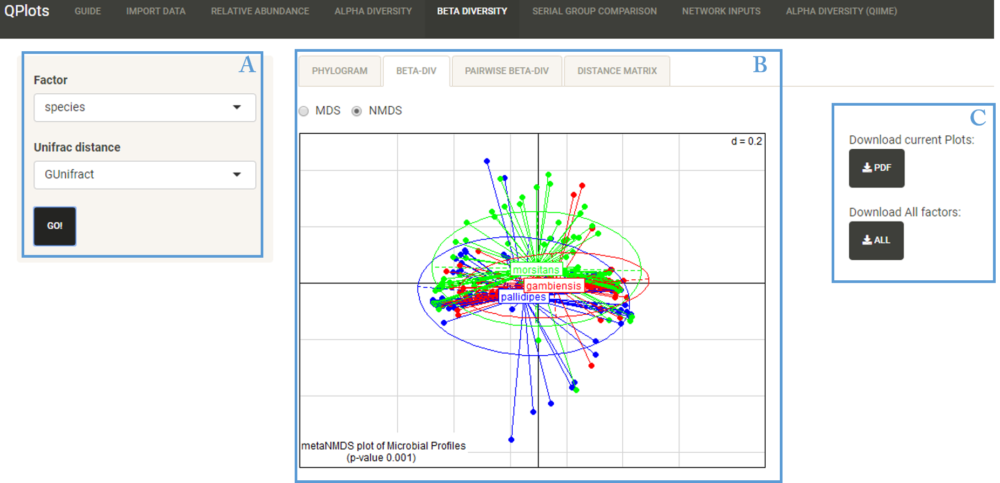

This section is based on Rhea pipeline
This section aims to calculate the beta-diversity(diversity between samples), test and visualize groupings of samples according to given categories
Beta-diversity gives a measure of similarity between different microbial profiles described by the OTUs table. The approach used to calculate similarity is generalized UniFrac (Chen et al. 2014), which extend the weighted and unweighted UniFrac distances.
Approches provided to calculate similarity are:
- GUnifract: Generalized Unifract distance (recommended)
- Weighted: Most sensitive to detect change in abundant lineages
- Unweighted: Most efficient in detecting abundance change in rare lineages
- VAW Unifract: variance-adjusted weighted UniFrac distance is a powerful method when species/OTUs are not uniformly distributed between communities (Chang et all. 2011).,
Visualization of the multidimensional distance matrix in a space of two dimensions is performed by:
- Multi-Dimensional Scaling
- Non-metric Multi-Dimensional Scaling
User Interface

- A: Dynamic Input
- B: Output: Contains Phylogram, Beta Div. plot, pairwise Beta Div., Distance matrix
- C: Download Current plot or plots for all the categorical factors in PDF format
Options
- Factor: Select factor from the categorial variables in mapping file
- UniFrac distance: Choose UniFrac distance (GUnifract, Weighted, Unweighted and VAW-UniFrac
Output
- Phylogram: Represents the hierarchical clustering of samples
- Beta-Div: MDS or NMDS plots calculated from the UniFrac dissimilarity matrix. These plots are annotated with p-values of the PERMANOVA test indicating the significance of group separations and the dissimilarity scale of the grid (e.g. d=0.2 mean that the distance between two grid lines represent approximately 20% dissimilarity between the samples)
- Pairewise Beta Div: Pairwise comparisons between groups, with p-values of the PERMANOVA test for significant separation between pairs of groups. This is applied whenever more than two groups exist and the PERMANOVA test across all groups is significant.
- Distance matrix: Dissimilarity matrix calculated across all samples